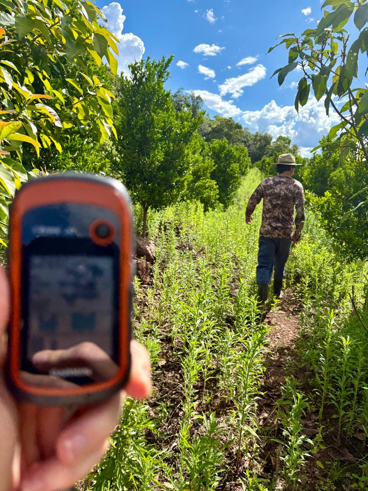
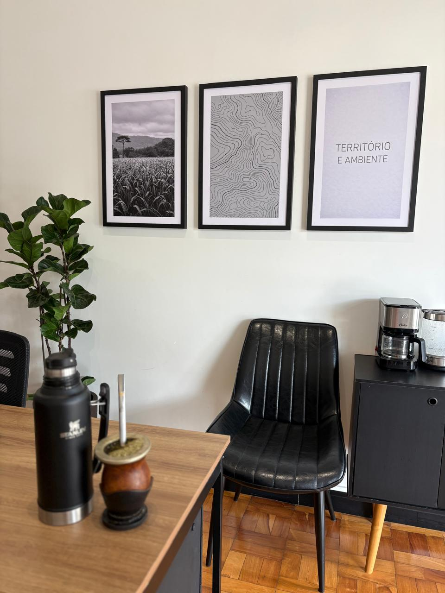
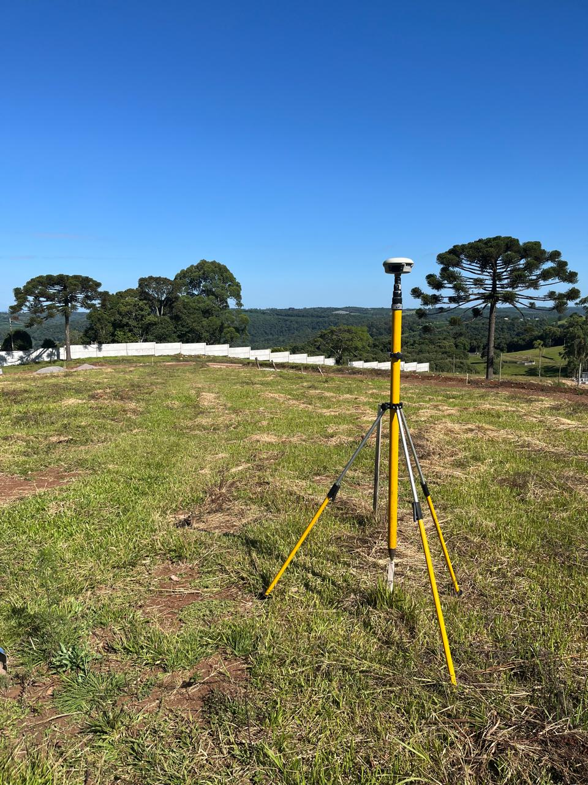
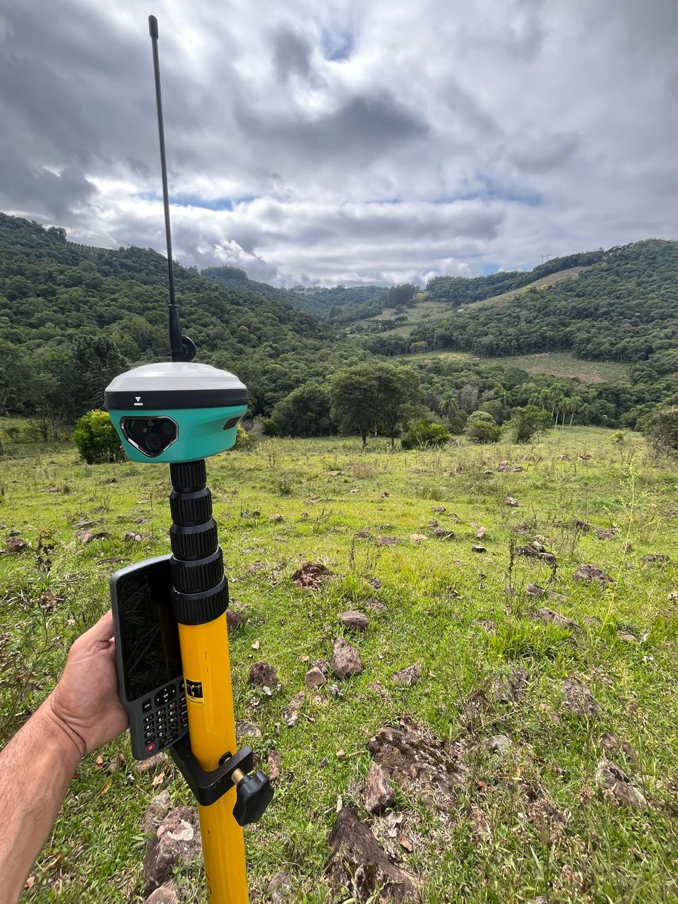
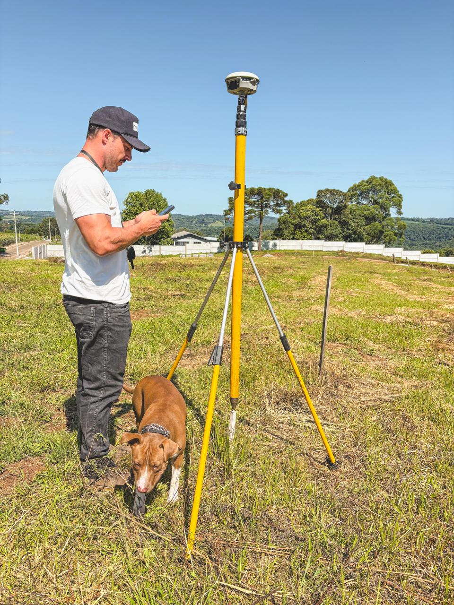
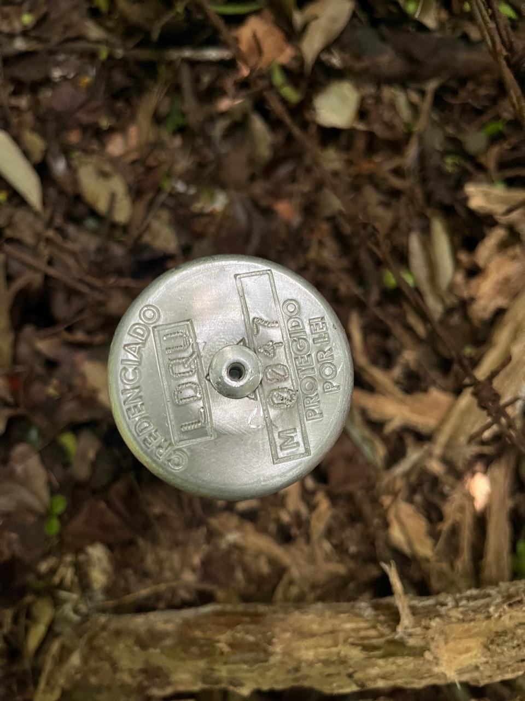
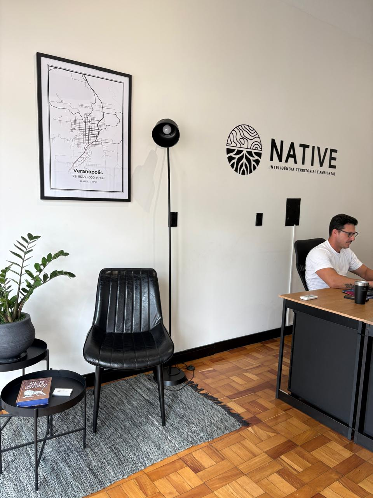
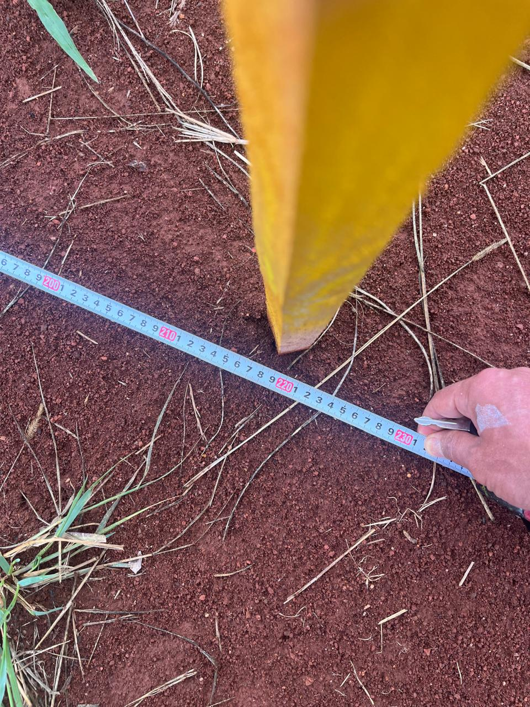
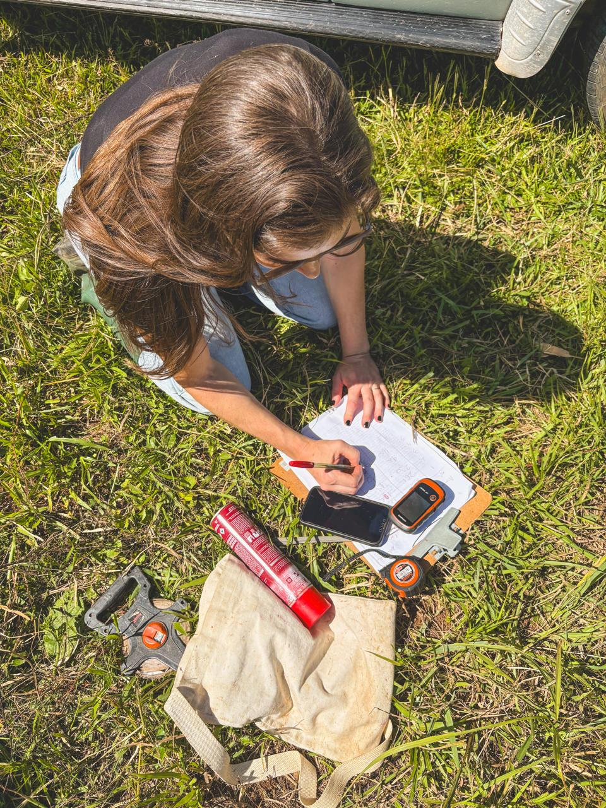
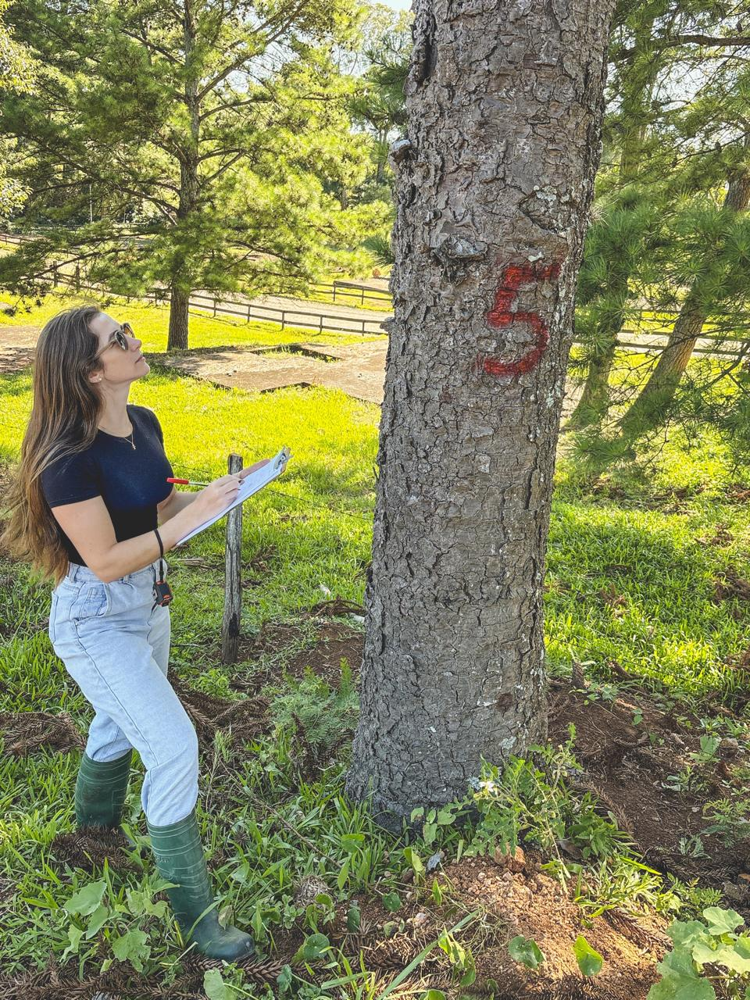

A NATIVE Inteligência Territorial e Ambiental atua com serviços de topografia, levantamento topográfico, georreferenciamento rural (SIGEF/INCRA), loteamentos e regularização de áreas em Veranópolis, Vila Flores, Nova Bassano e região.
Evita prejuízo por área errada, acelera regularização e melhora a segurança documental.
Compra, venda e implantação com documentação clara e menor risco técnico.
Laudos, memoriais e documentação técnica com ART para processos e registros imobiliários.

A NATIVE Inteligência Territorial e Ambiental é uma empresa especializada em topografia, georreferenciamento rural e licenciamento ambiental, com base em Veranópolis/RS e atuação em toda a Serra Gaúcha e estados vizinhos.
Trabalhamos com equipamentos GNSS de precisão, emitimos ART em todos os serviços e você fala direto com o profissional que executa — sem intermediários.
Nossa missão é entregar clareza técnica, documentação segura e orientação real para proprietários rurais, empresas, investidores e profissionais que precisam de precisão no território.
Soluções técnicas sob medida para imóveis rurais, áreas urbanas, loteamentos e regularização territorial.

Executamos levantamento topográfico, planialtimétrico, plantas, mapas e conferência de área para terrenos urbanos, imóveis rurais, obras e implantação de projetos.
Saiba mais →
Organizamos perímetro, compatibilização documental, mapas e acompanhamento técnico para processos de georreferenciamento conforme exigências do SIGEF e do INCRA.
Saiba mais →
Apoio técnico para loteamentos, conferência de lotes, regularização de áreas e demandas ambientais conectadas ao uso seguro do imóvel.
Saiba mais →Do primeiro contato à entrega final, um processo claro e organizado.
Entendemos seu objetivo, localização do imóvel e documentação disponível.
Execução técnica no local com equipamentos de precisão (GNSS, estação total).
Mapas, plantas, memoriais descritivos, relatórios e organização completa dos dados.
Tudo organizado com ART, orientação clara e indicação do próximo passo.
A NATIVE tem base em Veranópolis-RS e atende demandas em Vila Flores, Nova Bassano e outras cidades da região, além de atuar em Rio Grande do Sul, Santa Catarina, Paraná e São Paulo.
Atendemos com agilidade toda a Serra Gaúcha e região, com deslocamento rápido para os municípios vizinhos.
Veranópolis — RS
Atendimento também em RS, SC, PR e SP
WhatsApp direto com o profissional





Um serviço de topografia bem executado reduz risco, evita divergência de área e dá mais segurança para compra, venda, regularização e obras.
Equipamentos GNSS e processamento rigoroso em campo e escritório.
ART assinada e respaldo legal completo em todos os serviços.
Você fala direto com quem executa o serviço, sem intermediários.
Conhecemos a Serra Gaúcha, os cartórios e os órgãos locais.
Proprietários rurais, advogados e empresas que resolveram sua situação fundiária com a NATIVE.
"Precisava regularizar uma propriedade rural há anos parada no INCRA. A NATIVE resolveu tudo — georreferenciamento, SIGEF e matrícula — com clareza e prazo cumprido. Recomendo sem hesitar."
"Contratei para levantamento topográfico de um terreno antes da compra. O laudo foi detalhado, entregue dentro do prazo e com toda a documentação em ordem. Profissional e eficiente."
"Como advogada, preciso de laudos técnicos confiáveis para processos de inventário e divisão de área. A NATIVE entrega documentação impecável, com ART e memorial descritivo completo."
O valor depende da área, acesso, tipo de imóvel, documentação disponível, urgência e tipo de entrega. A proposta é feita sob medida após entendermos sua demanda.
Levantamento topográfico urbano (lote padrão): a partir de R$ 800
Georreferenciamento rural (pequenas propriedades até 5 ha): a partir de R$ 2.500
Áreas maiores ou com complexidade: orçamento sob consulta
Esses valores são apenas uma referência inicial. Entre em contato com sua cidade, tipo de imóvel e tamanho aproximado para receber uma proposta personalizada.
Varia conforme a demanda, agenda de campo e necessidade de processamento. A proposta já sai com prazo estimado para que você tenha clareza desde o início. Georreferenciamentos simples costumam ser entregues em 15 a 30 dias após a execução de campo.
Sim. Atendemos áreas rurais, urbanas, loteamentos, conferência de lotes, levantamento topográfico e georreferenciamento. A proposta é adaptada conforme o tipo de imóvel e a necessidade.
Não. Nossa base é em Veranópolis, mas atendemos também Vila Flores, Nova Bassano, Cotiporã, Fagundes Varela, Nova Prata e outras cidades da Serra Gaúcha, além de demandas em RS, SC, PR e SP.
Georreferenciamento é o processo de determinar os limites de um imóvel rural com coordenadas geográficas precisas, conforme exigências do INCRA. É obrigatório para qualquer transação (venda, inventário, divisão, desmembramento) de imóveis rurais, independente do tamanho. Sem ele, o cartório não registra.
Chama no WhatsApp e manda a cidade, o tipo de serviço e uma noção da área ou do objetivo da demanda. Respondemos rápido e com clareza.
💬 Falar no WhatsAppEnvie sua demanda pelo WhatsApp com cidade, tipo de serviço e tamanho aproximado da área. Receba uma proposta personalizada com prazo e escopo definidos.
💬 Enviar demanda pelo WhatsApp